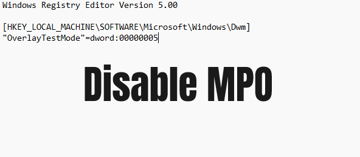
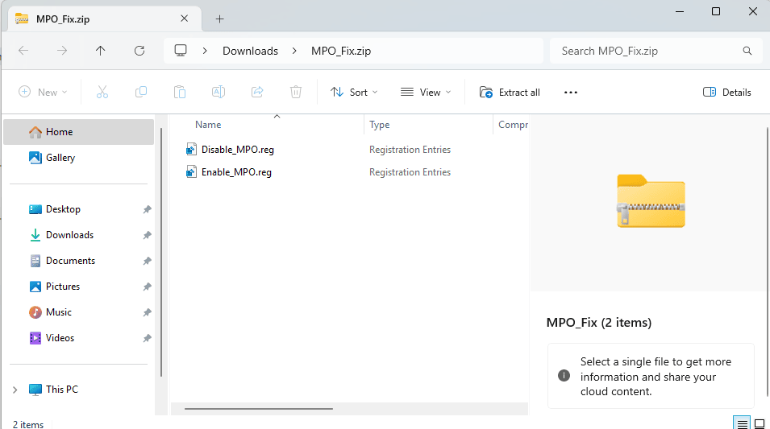

Download: Multi-Plane Overlay Fix
The Disable_MPO.reg and Enable_MPO.reg files can be used to disable the Windows 8.1, 10, 11 Multi-Plane Overlay feature.
What do the .reg files do?
There are two .reg files, these files enable and disable the Multi-Plane Overlay feature that is present in Windows 8.1 and later.
In later versions of Windows 10 and in Windows 11 the Multi-Plane Overlay feature can cause problems with Hardware Acceleration, this can result in black artefacts, black checkerboards, and black flashing screens, etc, to learn more visit the 'Fix Hardware Acceleration Black Screen' article.
View Fix Hardware Acceleration Black Screen article.Downloading the .reg Files
You can download the .reg files using the download button below, this should start the download process.
Download MPO_Fix.zip Once you have downloaded the file, you should have a .zip folder called MPO_Fix.zip, this folder should contain the Disable_MPO.reg and Enable_MPO.reg registry files, if you do not see these scripts, it is possible that there is a problem with the download, if this happens try downloading again.
Explaining the .reg files
The registry files are easy to use, you will have two files "Disable_MPO.reg" and "Enable_MPO.reg".
Disable_MPO.reg: This will disable Multi-Plane Overlay on your Windows 8.1 or later pc; this is used to apply the hardware acceleration fix.
Enable_MPO.reg: This will enable Multi-Plane Overlay and reverse any changes that have been made to your computer.
To make the changes to your computer, you simply need to double click on the file you would like to run, once you have been told that the file has been successfully added to the registry you will need to restart your computer.
If Disabling Multi-Plane Overlay did not fix your problems, I strongly advise that you re-enable it as this could potentially cause performance issues if you have disabled it and it wasn't the cause of your problems.
Page Updated: 29/05/2024
Page Author: Hackboto